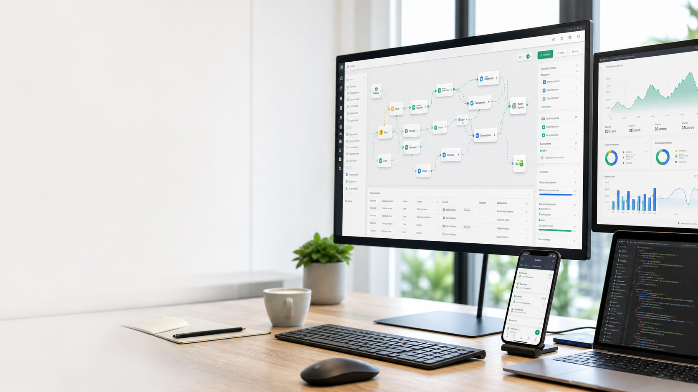
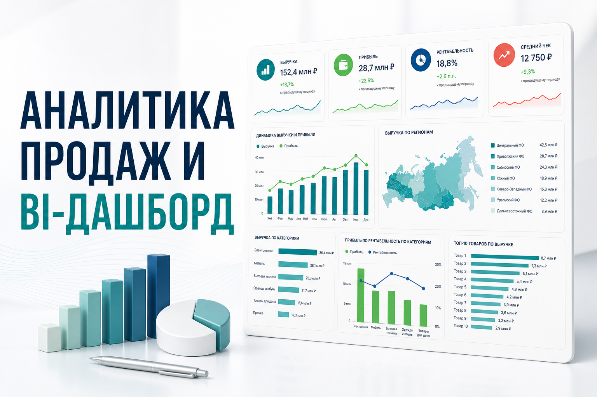

Автоматизация процессов
n8n, Make, Google Apps Script, ветвление, расписания, очереди и обработка ошибок.

Автоматизация · AI · Vibe coding
Превращаю ручные процессы в надежные системы, которые экономят время, уменьшают ошибки и помогают бизнесу работать прозрачнее.
Что я делаю
Подключаю сервисы, AI и данные так, чтобы сценарий выдерживал не только демонстрацию, но и ежедневное использование.
n8n, Make, Google Apps Script, ветвление, расписания, очереди и обработка ошибок.
Оркестрация сценариев, базы знаний, классификация, извлечение данных и консультационные интерфейсы.
REST API, amoCRM, Bitrix24, Telegram, Google Workspace, PostgreSQL, NocoDB и внешние сервисы.
Лендинги, внутренние инструменты, Android-приложения и быстрые рабочие прототипы.
Избранные кейсы
Коммерческие и production-ориентированные проекты. Часть данных и экранов обезличена.
Еще проекты
Динамические цены из каталога, создание контакта и сделки, добавление курса как товарной позиции.
Открыть сайт
Выручка, прибыль, рентабельность, регионы, категории, сегменты и ABC-анализ.
Power BI · Google SheetsОбо мне
Я автоматизатор и вайб-кодер. Создаю сценарии в n8n и Make, интеграции с API, Telegram и Google Workspace. Продумываю обработку ошибок, защиту от дублей и документацию, чтобы автоматизация была надежной, понятной и действительно полезной бизнесу.
«Сценарий настроен корректно: есть запуск по расписанию, сбор данных, расчет метрик и отправка результата. Логи подтверждают успешные исполнения».
Обратная связь куратора Zerocoder по учебному проекту
Контакты
Опишите задачу, текущие сервисы и желаемый результат. Я помогу определить, где автоматизация даст наибольшую пользу.